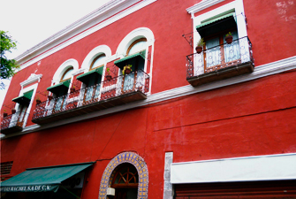

La casa

La casa que alberga la colección artística de Don José Luis Bello y Zetina fue parte del monumental convento de la Orden de Santo Domingo De Guzmán, que abarcaba dos manzanas enteras. Con "Las Leyes de Reforma" que expropiaron todas las propiedades de la iglesia, fueron expulsados los frailes de su propiedad en 1861 y destruido gran parte del convento. El resto fue vendido a particulares. Don José Luis Bello y González, abuelo de nuestro coleccionista, compró la parte del convento que era el antiguo portal de peregrinos, adaptando la planta baja para comercios y construyendo una casa habitación en la planta alta en la que vivió Don Rodolfo Bello y Acedo y la heredó a su hijo, Don José Luis. La parte de la construcción que da al atrio de la iglesia, es una hermosa muestra del trabajo de yeserías barrocas del siglo XVII, que tanta fama dieron a nuestra ciudad. Se observan los tres arcos tapiados del antiguo portal de peregrinos y sobre estos, tres ventanas profusamente decoradas, conservando sobre ellas, el escudo de la Orden Dominicana. La fachada a la calle 5 de mayo, fue reformada según los gustos del siglo XIX.